Forum
Work on one instrument
Open an instrument to see its first page, a short breakdown, and a few suggestions. A reply on a topic moves that topic up.
Popular topics
The comments with the most replies sit at the top.
Instruments
 01Candidate CommitmentAgreementA candidate reads the codes, signs this page, and gives members a signed copy.
01Candidate CommitmentAgreementA candidate reads the codes, signs this page, and gives members a signed copy.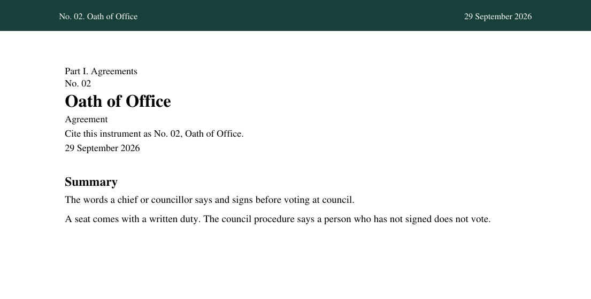
02Oath of OfficeAgreementThe words a chief or councillor says and signs before voting at council.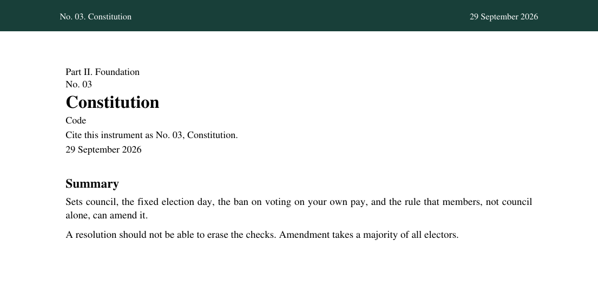
03ConstitutionCodeSets council, the fixed election day, the ban on voting on your own pay, and the rule that members, not council alone, can amend it.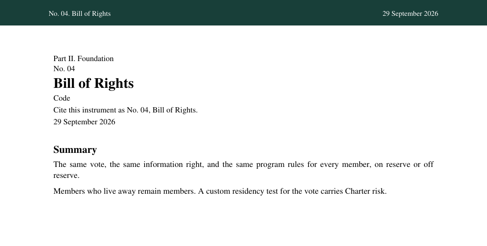
04Bill of RightsCodeThe same vote, the same information right, and the same program rules for every member, on reserve or off reserve.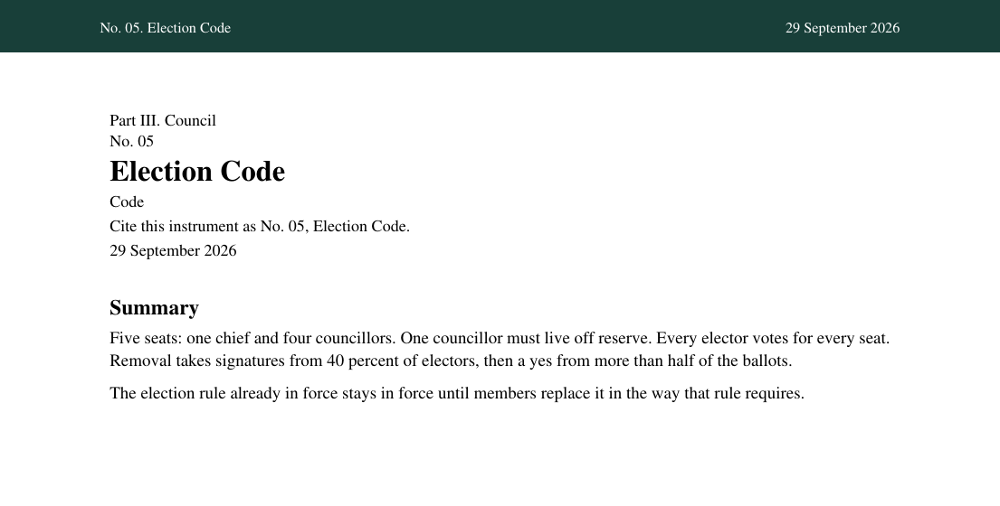
05Election CodeCodeFive seats: one chief and four councillors. One councillor must live off reserve. Every elector votes for every seat. Removal takes signatures from 40 percent of electors, then a yes from more than half of the ballots.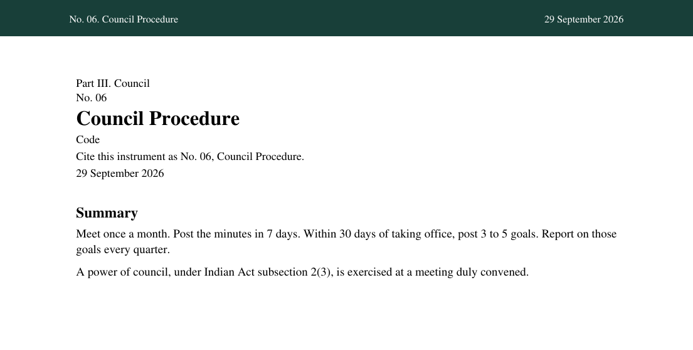
06Council ProcedureCodeMeet once a month. Post the minutes in 7 days. Within 30 days of taking office, post 3 to 5 goals. Report on those goals every quarter.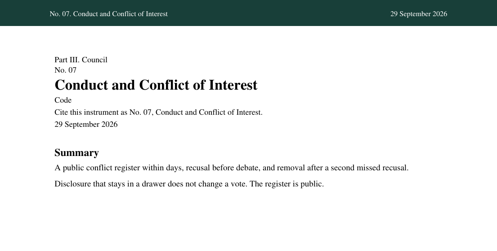
07Conduct and Conflict of InterestCodeA public conflict register within days, recusal before debate, and removal after a second missed recusal.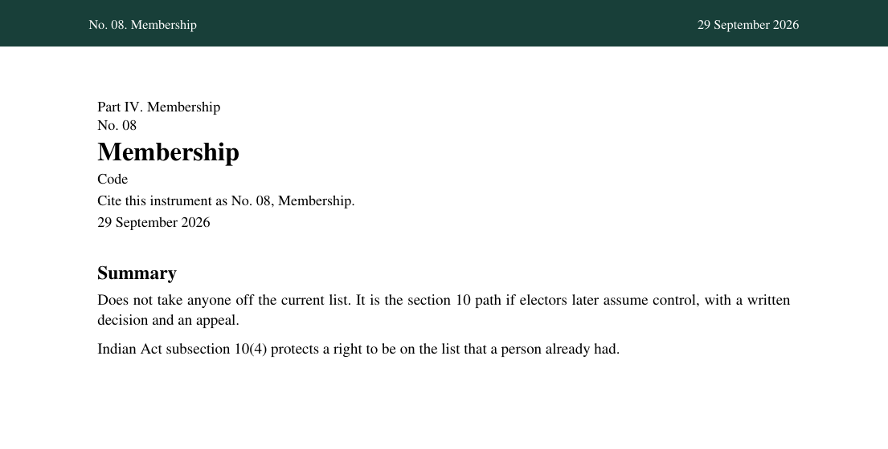
08MembershipCodeDoes not take anyone off the current list. It is the section 10 path if electors later assume control, with a written decision and an appeal.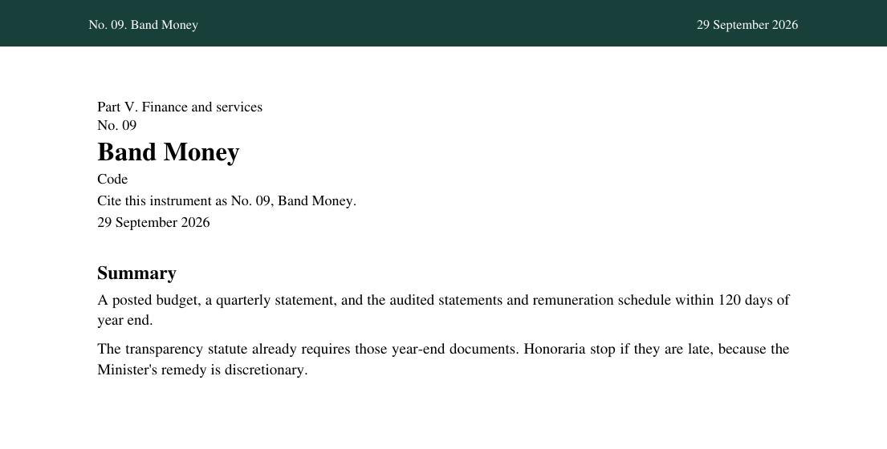
09Band MoneyCodeA posted budget, a quarterly statement, and the audited statements and remuneration schedule within 120 days of year end.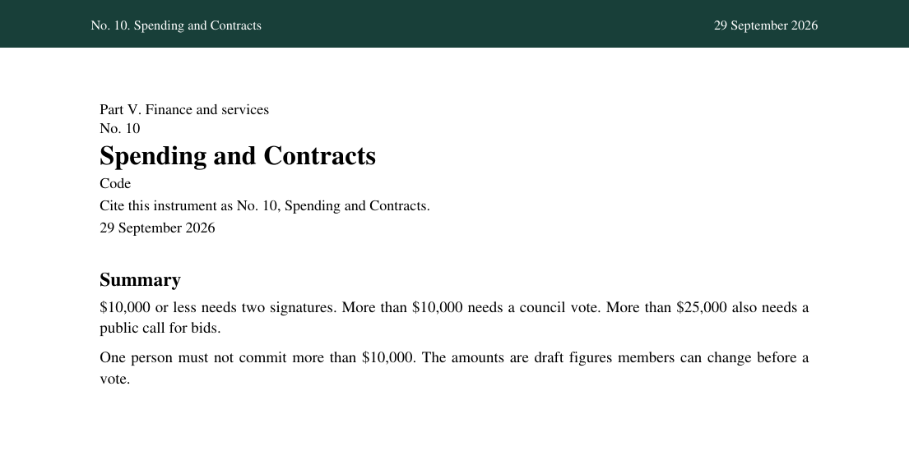
10Spending and ContractsCode$10,000 or less needs two signatures. More than $10,000 needs a council vote. More than $25,000 also needs a public call for bids.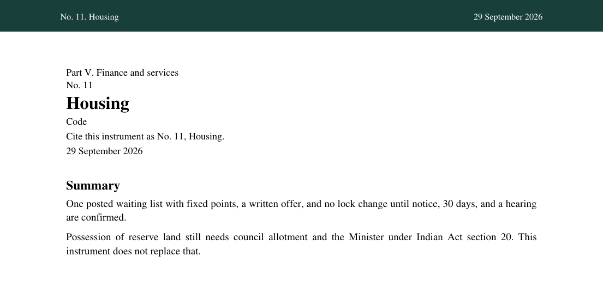
11HousingCodeOne posted waiting list with fixed points, a written offer, and no lock change until notice, 30 days, and a hearing are confirmed.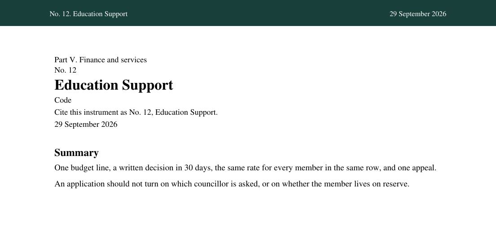
12Education SupportCodeOne budget line, a written decision in 30 days, the same rate for every member in the same row, and one appeal.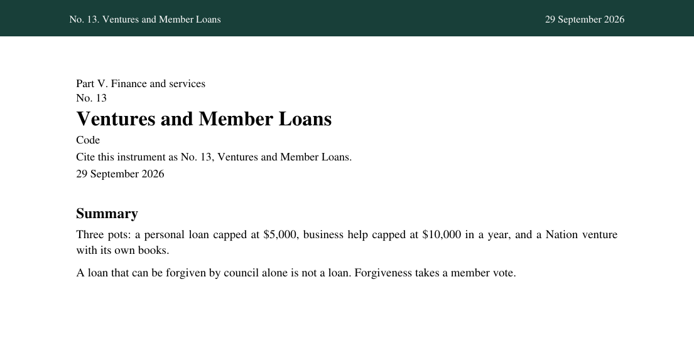
13Ventures and Member LoansCodeThree pots: a personal loan capped at $5,000, business help capped at $10,000 in a year, and a Nation venture with its own books.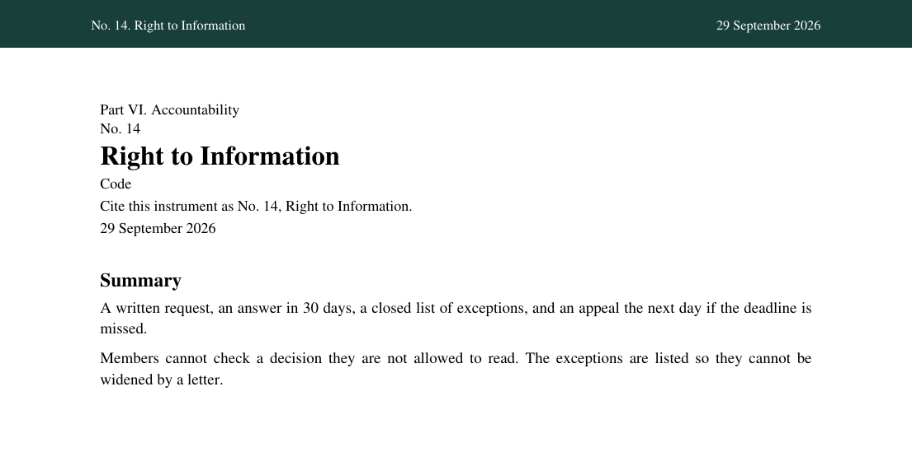
14Right to InformationCodeA written request, an answer in 30 days, a closed list of exceptions, and an appeal the next day if the deadline is missed.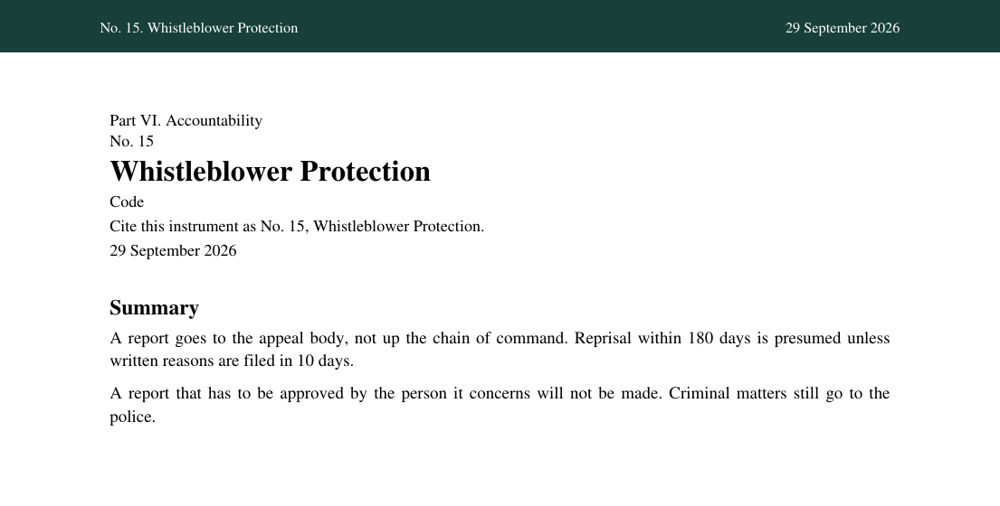
15Whistleblower ProtectionCodeA report goes to the appeal body, not up the chain of command. Reprisal within 180 days is presumed unless written reasons are filed in 10 days.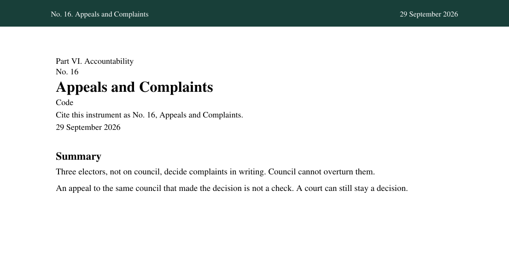
16Appeals and ComplaintsCodeThree electors, not on council, decide complaints in writing. Council cannot overturn them.